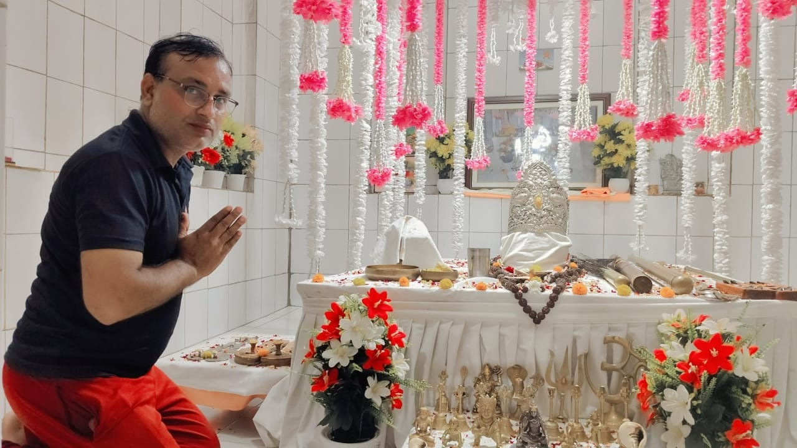

श्री जय बाबा गंगा दास धाम
गाँव परधाना, जिला पानीपत, हरियाणा
गाँव परधाना, जिला पानीपत, हरियाणा
आमेर की गद्दी से इस पावन भूमि पर
पधारे तपस्वी संत
सुबह : 05:00 बजे
शाम : 05:00 बजे
सुबह 04:00 बजे से
रात्रि 08:30 बजे तक
गुड़ एवं आटा
घमौरियाँ एवं फोड़े
की श्रद्धा से प्रार्थना
राजस्थान के आमेर की गद्दी से पूज्य बाबा परथने दास जी इस पावन भूमि पर पधारे और गाँव परधाना को अपनी तपोभूमि बनाया।
बाबा गंगा दास जी ने श्रद्धालुओं को सेवा, भक्ति एवं मानवता का संदेश दिया।
और पढ़ें

